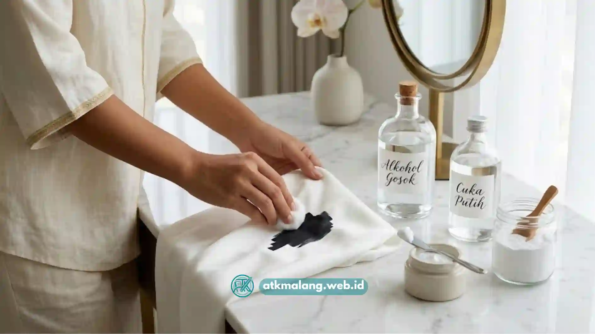

Cara menghilangkan noda spidol permanen umumnya dilakukan dengan bahan pelarut seperti alkohol gosok, hand sanitizer, atau penghapus cat kuku, tergantung jenis permukaan yang terkena noda.
Spidol permanen termasuk Alat Tulis Kantor yang paling sering meninggalkan noda pada baju, meja, hingga kulit. Berikut panduan lengkap membersihkannya dengan bahan yang mudah ditemukan.
- Noda spidol permanen sulit hilang karena tintanya mengandung pelarut yang meresap cepat ke permukaan.
- Alkohol gosok dan hand sanitizer adalah bahan rumahan yang paling umum digunakan.
- Cara pembersihan berbeda tergantung jenis permukaan: kain, plastik, keramik, atau kulit.
- Semakin cepat noda ditangani, semakin besar peluang noda hilang sepenuhnya.
- Selalu uji bahan pembersih di area kecil dan tersembunyi terlebih dahulu.
Daftar Isi
- Apa Itu Spidol Permanen dan Mengapa Nodanya Sulit Hilang?
- Bahan Apa Saja yang Efektif Menghilangkan Noda Spidol Permanen?
- Bagaimana Cara Menghilangkan Noda Spidol Permanen dari Kain?
- Bagaimana Cara Menghilangkan Noda Spidol Permanen dari Plastik dan Permukaan Keras?
- Bagaimana Cara Menghilangkan Noda Spidol Permanen dari Kulit?
- Apa Kesalahan Umum yang Membuat Noda Spidol Permanen Sulit Hilang?
- Tips Tambahan agar Noda Spidol Permanen Lebih Mudah Diatasi
- FAQ Noda Spidol Permanen
Apa Itu Spidol Permanen dan Mengapa Nodanya Sulit Hilang?
Spidol permanen adalah alat tulis dengan tinta berbahan dasar pelarut yang dirancang agar menempel kuat dan tidak mudah luntur, sehingga noda yang ditimbulkannya lebih sulit dihilangkan dibanding tinta biasa.
Sifat permanen ini berasal dari pelarut cepat kering, seperti alkohol atau bahan berbasis minyak, sehingga pigmen warna cepat meresap ke pori-pori permukaan.
Begitu pelarut menguap, pigmen yang tertinggal mengikat kuat pada serat kain, plastik, atau permukaan lain. Semakin lama noda dibiarkan, semakin dalam pigmen meresap dan semakin sulit diangkat hanya dengan air dan sabun biasa.
Inilah pembeda utama dengan spidol boardmarker untuk papan tulis yang memang dirancang mudah dihapus.
Bahan Apa Saja yang Efektif Menghilangkan Noda Spidol Permanen?
Bahan rumahan yang umum digunakan untuk menghilangkan noda spidol permanen antara lain alkohol gosok, hand sanitizer berbasis alkohol, penghapus cat kuku (nail polish remover), dan pasta gigi non-gel.
- Alkohol gosok (isopropil alkohol): melarutkan kembali pigmen tinta sehingga lebih mudah terangkat dari permukaan.
- Hand sanitizer: mengandung alkohol dalam konsentrasi yang cukup untuk membantu melunturkan noda ringan hingga sedang.
- Penghapus cat kuku berbahan aseton: efektif pada permukaan keras seperti plastik, namun berisiko merusak beberapa jenis kain sintetis.
- Pasta gigi non-gel: cocok untuk noda ringan pada permukaan keras, bekerja sebagai abrasif lembut.
- Cuka putih dan baking soda: alternatif yang lebih lembut, cocok untuk permukaan sensitif atau kain berwarna.
Pemilihan bahan sebaiknya disesuaikan dengan jenis permukaan agar tidak menimbulkan kerusakan tambahan, seperti perubahan warna atau tekstur.
Ringkasan pemilihan bahan berdasarkan jenis permukaan
| Permukaan | Bahan yang disarankan | Catatan |
|---|---|---|
| Kain katun dan umum | Alkohol gosok atau hand sanitizer | Tepuk dari luar ke dalam, ganti kapas berkala |
| Kain berwarna atau sensitif | Cuka putih dan baking soda | Uji dulu di bagian kain yang tidak terlihat |
| Plastik, kaca, keramik | Penghapus cat kuku beraseton atau pasta gigi non-gel | Gosok lembut, lalu lap dengan kain basah |
| Kulit | Hand sanitizer beralkohol, minyak zaitun, atau baby oil | Bilas dengan air dan sabun, jangan menggosok keras |
Bagaimana Cara Menghilangkan Noda Spidol Permanen dari Kain?
Cara menghilangkan noda spidol permanen dari kain adalah dengan meletakkan kain lap di bawah noda, lalu menepuk-nepuk area noda dengan kapas yang dibasahi alkohol gosok dari luar ke dalam.
Langkah-langkahnya secara umum:
- Letakkan kain bersih atau tisu di bagian bawah noda untuk menyerap tinta yang luntur.
- Basahi kapas atau kain lap dengan alkohol gosok atau hand sanitizer.
- Tepuk-tepuk perlahan area noda dari sisi luar menuju tengah agar noda tidak melebar.
- Ganti kapas secara berkala begitu warnanya mulai pudar agar tinta tidak menempel kembali ke kain.
- Setelah noda memudar, cuci kain seperti biasa menggunakan deterjen.
Bagaimana Cara Menghilangkan Noda Spidol Permanen dari Plastik dan Permukaan Keras?
Noda spidol permanen pada plastik, keramik, atau permukaan keras lainnya umumnya dapat dihilangkan dengan menggosokkan penghapus cat kuku beraseton atau pasta gigi non-gel menggunakan kain lembut.
Permukaan keras dan tidak berpori seperti plastik, kaca, atau keramik cenderung lebih mudah dibersihkan dibanding kain karena tinta tidak meresap terlalu dalam.

Pilih bahan pembersih yang sesuai dengan jenis permukaan agar noda hilang tanpa merusak benda.Teteskan sedikit penghapus cat kuku pada kapas, gosok perlahan pada noda, lalu lap dengan kain basah untuk membersihkan sisa bahan kimia.
Untuk plastik yang lebih sensitif terhadap bahan kimia keras, pasta gigi non-gel bisa menjadi alternatif yang lebih aman karena bersifat abrasif ringan tanpa melarutkan permukaan plastik itu sendiri.
Bagaimana Cara Menghilangkan Noda Spidol Permanen dari Kulit?
Noda spidol permanen di kulit dapat dihilangkan dengan hand sanitizer berbasis alkohol atau minyak zaitun yang digosokkan lembut, lalu dibilas dengan air dan sabun.
Kulit manusia bersifat lebih sensitif dibanding permukaan benda mati, sehingga bahan yang digunakan sebaiknya lebih lembut. Hand sanitizer dengan kandungan alkohol umumnya cukup efektif untuk noda yang belum lama menempel.
Sebagai alternatif yang lebih lembut, minyak zaitun atau baby oil dapat digosokkan perlahan menggunakan kapas, kemudian dibilas dengan air hangat dan sabun.
Apa Kesalahan Umum yang Membuat Noda Spidol Permanen Sulit Hilang?
Kesalahan umum yang membuat noda spidol permanen sulit dihilangkan adalah menunda pembersihan, menggosok noda terlalu keras hingga melebar, dan langsung mencuci kain dengan air panas sebelum noda diatasi.
- Menunda pembersihan: semakin lama noda dibiarkan, semakin dalam pigmen meresap ke permukaan.
- Menggosok terlalu keras: gerakan menggosok yang kasar justru dapat menyebarkan noda ke area yang lebih luas.
- Mencuci dengan air panas terlebih dahulu: panas dapat membuat pigmen tinta mengunci lebih kuat pada serat kain.
- Tidak menguji bahan pembersih: penggunaan bahan kimia tanpa uji coba dapat merusak warna atau tekstur permukaan.
- Menggunakan bahan yang salah untuk jenis permukaan: misalnya menggunakan aseton pada bahan sintetis yang mudah meleleh atau berubah tekstur.
Tips Tambahan agar Noda Spidol Permanen Lebih Mudah Diatasi
Beberapa tips yang dapat membantu proses pembersihan noda spidol permanen antara lain menangani noda sesegera mungkin, bekerja dari bagian luar noda ke dalam, dan selalu menyiapkan lebih dari satu bahan pembersih sebagai cadangan.
Selain itu, sediakan area kerja dengan ventilasi yang baik karena alkohol dan aseton memiliki aroma yang cukup menyengat.
Menggunakan sarung tangan juga membantu melindungi kulit dari paparan bahan kimia berlebihan, terutama jika noda cukup luas.
Noda spidol permanen memang sulit dihilangkan, namun dengan bahan rumahan yang tepat seperti alkohol gosok, hand sanitizer, atau penghapus cat kuku, sebagian besar noda dapat diatasi secara signifikan bila ditangani secepat mungkin.
Pemilihan bahan pembersih sebaiknya disesuaikan dengan jenis permukaan agar hasil maksimal tanpa merusak benda yang terkena noda.
Lengkapi persediaan Alat Tulis Kantor Anda melalui layanan pengadaan ATK kantor resmi di Malang, atau lihat Paket Pelajar untuk kebutuhan sekolah.